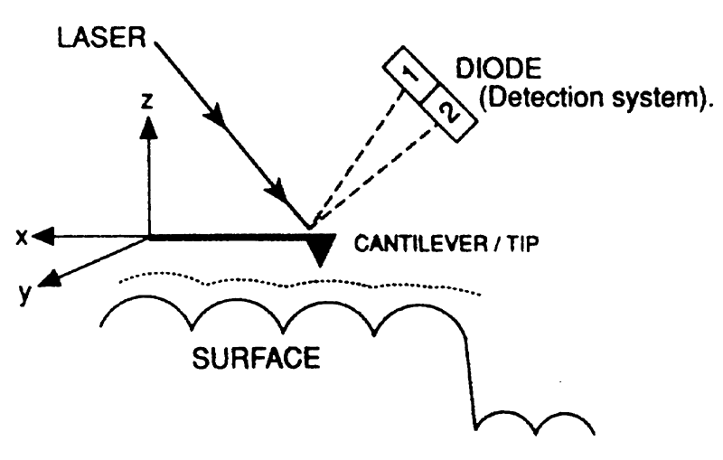

Atomic Force Microscopie
AFM is gebaseerd op de registratie van aantrekkings- en vooral afstotingskrachten die inwerken op de spitse probe wanneer deze in contact komt met het specimenoppervlak.
De spitse probe is hierbij gemonteerd op een lange hefboom (cantilever) die door een veer in een bepaalde stand gehouden wordt. De minste wijziging van de stand van deze hefboom onder invloed van hogervermelde afstotingskrachten wordt gemeten doordat een gewijzigde stand van de hefboom een verandering in de reflectie van een op de hefboom gerichte laserstraal veroorzaakt (zie figuur hieronder).
Meestal wordt de afstand tussen probe en specimen aangepast om de hefboom weer in zijn normale stand te krijgen. Deze wijziging in de Z-instelling is rechtstreeks een maat van de hoogte van het specimen op die plaats en aldus wordt informatie verkregen over de oppervlaktetopografie van dit specimen.
Gezien de soort van krachten die dit instrument opmeet (Van der Waalse krachten) is de AFM beter geschikt dan de STM om biologische structuren te bestuderen.
AFM kan op drie verschillende manieren gebeuren:
AFM maakt het niet alleen mogelijk geïsoleerde macromoleculen te visualiseren, doch ook bv. macromoleculen ingebed in een stuk geïsoleerd celmembraan.
De spitse probe is hierbij gemonteerd op een lange hefboom (cantilever) die door een veer in een bepaalde stand gehouden wordt. De minste wijziging van de stand van deze hefboom onder invloed van hogervermelde afstotingskrachten wordt gemeten doordat een gewijzigde stand van de hefboom een verandering in de reflectie van een op de hefboom gerichte laserstraal veroorzaakt (zie figuur hieronder).
Meestal wordt de afstand tussen probe en specimen aangepast om de hefboom weer in zijn normale stand te krijgen. Deze wijziging in de Z-instelling is rechtstreeks een maat van de hoogte van het specimen op die plaats en aldus wordt informatie verkregen over de oppervlaktetopografie van dit specimen.
Gezien de soort van krachten die dit instrument opmeet (Van der Waalse krachten) is de AFM beter geschikt dan de STM om biologische structuren te bestuderen.
AFM kan op drie verschillende manieren gebeuren:
- contact-mode
Deze methode is gebaseerd op de Van der Waalse krachten die optreden wanneer 2 oppervlakken zeer dicht bij elkaar komen. De punt van de probe komt in contact met het specimen-oppervlak. Voordeel van deze methode is dat voor harde specimens een zeer hoge resolutie kan gerealiseerd worden. Nadeel is echter dat bij zachte specimens (i.e. de meeste biologische specimens) de punt van de probe het specimen-oppervlak kan beschadigen. - non-contact-mode
Bij de tweede methode wordt ervoor gezorgd dat de punt van de probe het preparaat afscant terwijl de afstand tussen probe en specimen-oppervlak steeds constant gehouden wordt. De hefboom zal hierbij vibreren bij een frequentie gelijk aan de resonantiefrequentie. De aard van de interactie tussen de punt van de probe en het specimen-oppervlak is een aantrekkingskracht waardoor de amplitude van de trilling van de hefboom gaat fluctueren naargelang de oppervlaktetopografie. Voordeel van deze methode is dat zachte specimens kunnen geanalyseerd worden zonder risico op beschadiging. De te behalen resolutie is echter duidelijk geringer in vergelijking met de contact-methode. - tapping-mode
Deze methode is eigenlijk een hybridevorm van de eerste twee, waarbij getracht wordt de voordelen van de contact- en niet-contact-methode te verenigen.
AFM maakt het niet alleen mogelijk geïsoleerde macromoleculen te visualiseren, doch ook bv. macromoleculen ingebed in een stuk geïsoleerd celmembraan.

De AFM werd geïntroduceerd in 1986 en is gebaseerd op de registratie van aantrekkings- en vooral afstotingskrachten (grootte-orde 10-9 tot 10-10N) die inwerken op de spitse probe wanneer deze in contact komt met het specimenoppervlak. De spitse probe is hierbij gemonteerd op een lange hefboom (cantilever) die door een veer in een bepaalde stand gehouden wordt. De minste wijziging van de stand van deze hefboom onder invloed van hogervermelde afstotingskrachten wordt gemeten doordat een gewijzigde stand van de hefboom een verandering in de reflectie van een op de hefboom gerichte laserstraal veroorzaakt.